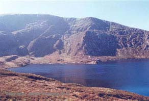

We are Peter and Jane Ryan and we have three children, Andrew (aged 15), Michael (aged 12) and Sophie (aged 9). We also have a crazy mixed-up dog called Rufus and a black and white cat called Muff.
The boys are into soccer and Taekwondo, while Sophie is a talented Irish dancer and is learning to play the piano. She can also hold her own with the boys on the soccer pitch.
We live in a Dublin suburb, but love the outdoor life and go hill walking whenever we can. For most of the year we go walking in the Wicklow Mountains, weather permitting of course. Some years we spend our summer holiday in the Austrian Alps.
Find out more about the Wicklow Mountains.
Find out more about the Austrian Alps.